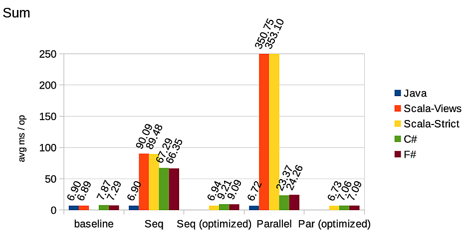
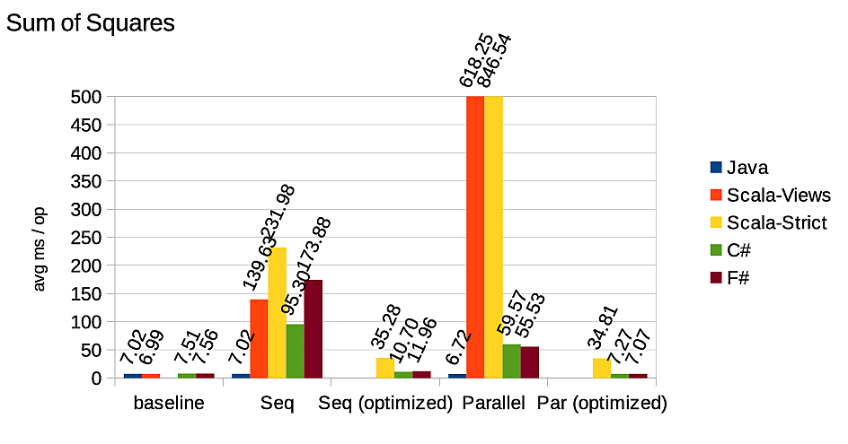
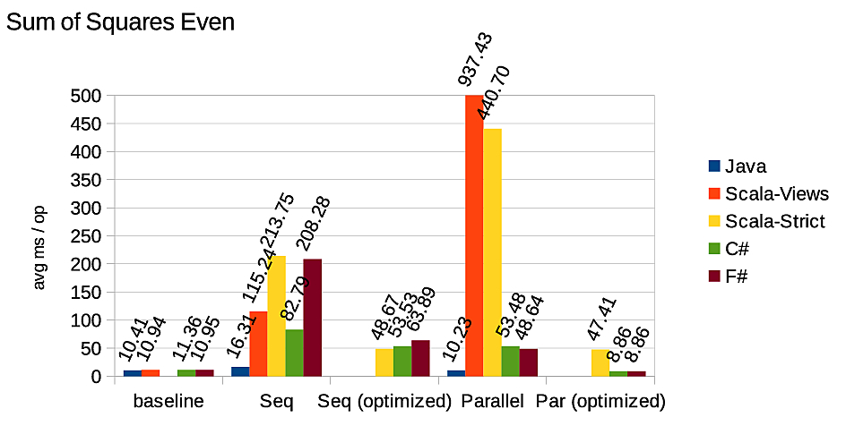
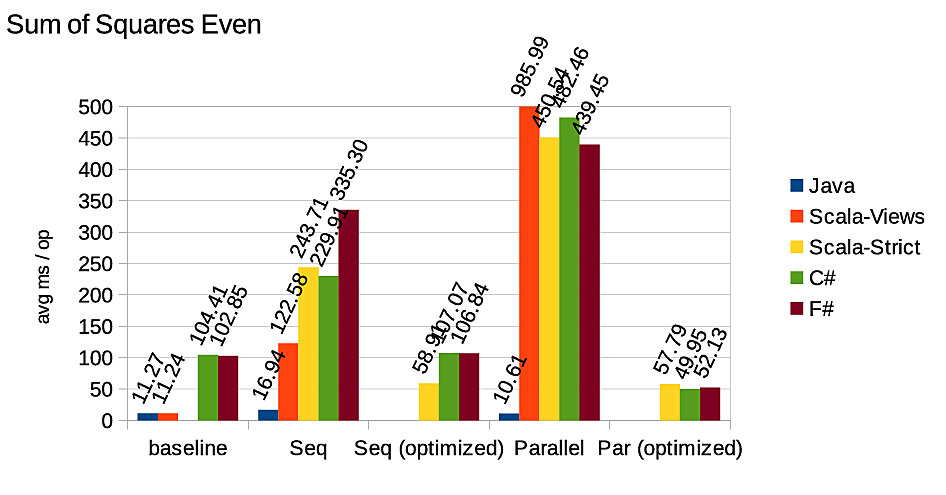
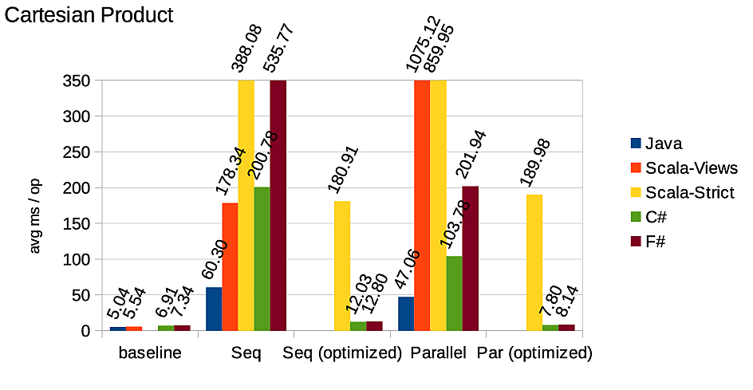
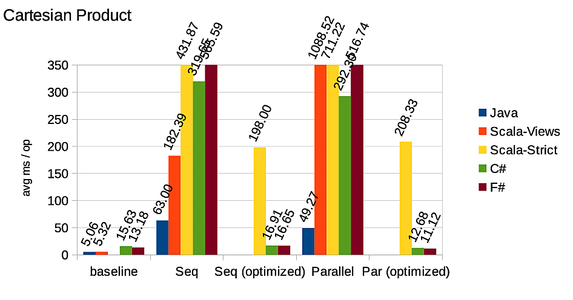

Full name: CDocument.data
from Microsoft.FSharp.Collections
Full name: Microsoft.FSharp.Collections.Array.map
val int64 : value:'T -> int64 (requires member op_Explicit)
Full name: Microsoft.FSharp.Core.Operators.int64
--------------------
type int64 = System.Int64
Full name: Microsoft.FSharp.Core.int64
--------------------
type int64<'Measure> = int64
Full name: Microsoft.FSharp.Core.int64<_>
from Microsoft.FSharp.Collections
Full name: Microsoft.FSharp.Collections.Seq.filter
Full name: Microsoft.FSharp.Collections.Seq.map
Full name: Microsoft.FSharp.Collections.Seq.sum
Full name: Microsoft.FSharp.Collections.Seq.iter
Full name: Microsoft.FSharp.Core.unit
val seq : sequence:seq<'T> -> seq<'T>
Full name: Microsoft.FSharp.Core.Operators.seq
--------------------
type seq<'T> = System.Collections.Generic.IEnumerable<'T>
Full name: Microsoft.FSharp.Collections.seq<_>
Full name: Microsoft.FSharp.Core.bool
F# Streams
A lightweight F#/C# library for efficient functional-style pipelines on streams of data.
About Me
- Gian Ntzik (aka Jan Dzik)
- @anirothan
- Imperial College, Nessos
About Nessos
- ISV based in Athens, Greece
- .NET experts
- Open source F# projects
- {m}brace
- FsPickler, Vagrant, and of course Streams
Motivation
Make functional data query pipelines FAST
LinqOptimizer
An automatic query optimizer-compiler for Sequential and Parallel LINQ.
LinqOptimizer
- compiles LINQ queries into fast loop-based imperative code
- speedups of up to 15x
Example
The query
var query = (from num in nums.AsQueryExpr()
where num % 2 == 0
select num * num).Sum(); |
compiles to
int sum = 0;
for (int index = 0; index < nums.Length; index++)
{
int num = nums[index];
if (num % 2 == 0)
sum += num * num;
} |
Disadvantages
- Runtime compilation
- Overhead (mitigated by caching)
- Emitting IL not cross-platform (e.g. security restrictions in cloud, mobile)
- Access to private fields/methods?
- Problematic F# support
- New operations => compiler changes
Should become a Roslyn compile time plugin in future
Clash of the Lamdas
ICOOOLPS'14
Aggelos Biboudis (@biboudis)
Nick Palladinos (@NickPalladinos)
Yannis Smaragdakis
Performance Benchmarks
Sum (windows)

Sum (linux)

Sum of squares (windows)

Sum of squares (linux)

Sum of even squares (windows)

Sum of even squares (linux)

Cartesian product (windows)

Cartesian product (linux)

Java 8 very fast
LinqOptimizer improving F#/C# performance
What makes Java 8 faster?
Streams!
Typical Pipeline Pattern
1:
|
source |> inter |> inter |> inter |> terminal |
- inter : intermediate (lazy) operations, e.g. map, filter
- terminal : produces result or side-effects, e.g. reduce, iter
Seq example
1: 2: 3: 4: 5: |
let data = [| 1..10000000 |] |> Array.map int64 data |> Seq.filter (fun i -> i % 2L = 0L) //lazy |> Seq.map (fun i -> i + 1L) //lazy |> Seq.sum //eager, forcing evaluation |
Seq is pulling
1: 2: 3: 4: 5: |
let data = [| 1..10000000 |] |> Array.map int64 data |> Seq.filter (fun i -> i % 2L = 0L) //lazy inter |> Seq.map (fun i -> i + 1L) //lazy inter |> Seq.sum //eager terminal, forcing evaluation |
The terminal is pulling data from the pipeline via IEnumerator.Current and IEnumerator.MoveNext()
With Streams
1: 2: 3: 4: 5: |
let data = [| 1..10000000 |] |> Array.map int64 Stream.ofArray data //source |> Stream.filter (fun i -> i % 2L = 0L) //lazy |> Stream.map (fun i -> i + 1L) //lazy |> Stream.sum //eager, forcing evaluation |
Streams are pushing!
Streams are pushing
1: 2: 3: 4: |
Stream.ofArray data //source |> Stream.filter (fun i -> i % 2L = 0L) //lazy |> Stream.map (fun i -> i + 1L) //lazy |> Stream.sum //eager, forcing evaluation |
The source is pushing data down the pipeline.
How does it work?
Starting from Seq.iter
1:
|
Seq.iter : ('T -> unit) -> seq<'T> -> unit |
Flip the args
1:
|
seq<'T> -> ('T -> unit) -> unit |
Stream!
1:
|
type Stream<'T> = ('T -> unit) -> unit |
Continuation passing style!
Let's make us some (simple) Streams!
Simple Streams
1:
|
type Stream = ('T -> unit) -> unit |
Can do map, filter, fold, iter
When to stop pushing?
1:
|
type Stream = ('T -> unit) -> unit |
Stopping push required for e.g.
1:
|
Stream.takeWhile : ('T -> bool) -> Stream<'T> -> Stream<'T> |
Stopping push
Change
1:
|
type Stream = ('T -> unit) -> unit |
to
1:
|
type Stream = ('T -> bool) -> unit |
What about zip?
1:
|
Stream.zip : Stream<'T> -> Stream<'S> -> Stream<'T * 'S> |
Zip needs to synchronise the flow of values.
Zip needs to pull!
Streams can push and pull
1: 2: 3: 4: 5: 6: 7: |
// ('T -> bool) is the composed continutation with 'T for the current value // and bool is a flag for early termination // (unit -> unit) is a function for bulk processing // (unit -> bool) is a function for on-demand processing /// Represents a Stream of values. type Stream<'T> = Stream of (('T -> bool) -> (unit -> unit) * (unit -> bool)) |
The Streams library
Implements a rich set of operations
More examples
Parallel Streams
1: 2: 3: 4: 5: 6: |
let data = [| 1..10000000 |] |> Array.map int64 data |> ParStream.ofArray |> ParStream.filter (fun x -> x % 2L = 0L) |> ParStream.map (fun x -> x + 1L) |> ParStream.sum |
Cloud Streams!
Example: a word count
Streams are lightweight and powerful
In sequential, parallel and distributed flavors.
The holy grail is in reach
We can write functional pipelines with the performance of imperative code.
Stream fusion: from lists to streams to nothing at all, Duncan Coutts, Roman Leshchinskiy, and Don Stewart, ICFP '07
Almost
Depends on the compiler's ability to inline.
Inlining continuations = stream fusion
Stream operations are non-recursive
In principal, can be always fused (in-lined).
Not always done by F# compiler.
Experiments with MLton
by @biboudis
https://github.com/biboudis/sml-streams
MLton appears to always be fusing.
Can we make the F# compiler smarter?
Questions?